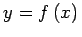
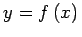
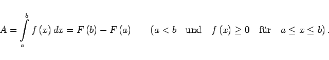
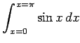
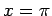
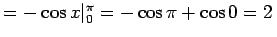
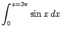
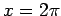
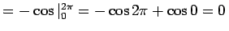

Inhalt Index DeskTop Bronstein

 Integralrechnung Bestimmte Integrale Grundbegriffe, Regeln und Sätze Eigenschaften bestimmter Integrale
Integralrechnung Bestimmte Integrale Grundbegriffe, Regeln und Sätze Eigenschaften bestimmter Integrale


Demzufolge ergibt der Grenzwert dieser Summe und damit das bestimmte Integral den Inhalt der Fläche  , die von der Kurve , der x-Achse und den Parallelen x = a und x = b zur y-Achse begrenzt wird:
, die von der Kurve , der x-Achse und den Parallelen x = a und x = b zur y-Achse begrenzt wird:
|  | (8.40) |
In der folgenden Abbildung, bestehend aus vier Teilabbildungen, sind vier Fälle mit unterschiedlichen Möglichkeiten der Flächen-Vorzeichenbildung dargestellt:
| Beispiel A |
|
 (lies Integral von x=0 bis ) , |
| Beispiel B |
|
 (lies Integral von x=0 bis ) . |